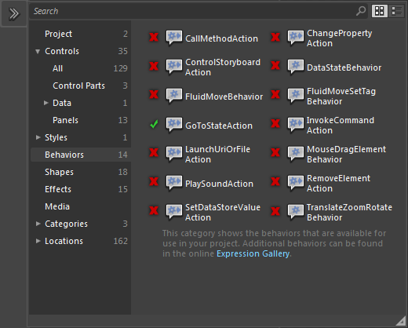

Behaviors
Behaviors are reusable pieces of packaged code that can be dragged onto any object, and then fine-tuned by changing their properties, to add interactivity to your application. Behaviors have a trigger, an action, and usually a target:
- The trigger is the event that invokes the behavior. The most useful triggers are user interface control events (like clicking) and those invoked by changes to system states (like storyboards ending or properties changing).
- The action specifies what the behavior should do. For example, an action might be to run a storyboard, or change a property of an element.
- The target is the element which the behavior will act upon.
Noesis GUI Framework implements the following Behaviors among those provided by Blend:
GoToStateAction
This action is used to transition a FrameworkElement to a specified VisualState when invoked. It has a TargetName property that if it is set, it will attempt to change the state of the targeted element. If not, it walks the element tree in an attempt to locate an alternative target that defines states, for example, a ControlTemplate or a UserControl.